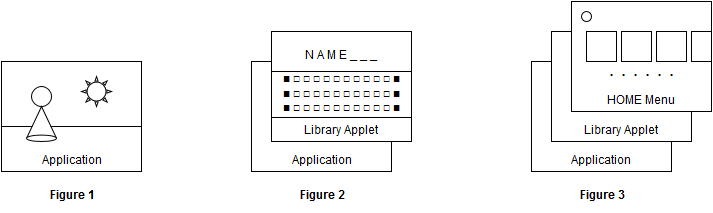

アプリケーションプログラムは、システムの状態変化や、アプリケーション自身のフォーカス状態変化に合わせてゲームの進行や演出などの処理を行ないます。アプリケーションはこれらの状態変更通知をメッセージとして受信することによって、以下のようなことを行うことができます。
以上のようなことを行う必要がない場合には、通知メッセージを受信する必要はありません。デフォルトでは、全てのメッセージが通知されない状態となっています。
本章に記載の機能は、NX32 および NX64 ビルド環境でのみ利用可能です。
プログラムは、システムの状態変化を通知メッセージとして受け取ることができます。これによって、アプリケーションの動作を変更することができます。
ただし、デフォルトでは全てのメッセージが通知されない設定になっており、アプリケーションは必要に応じて所望の通知メッセージが通知されるように設定しなければなりません。どのような通知メッセージが使用可能なのかは次節以降で説明します。
通知メッセージは nn::oe::Message 型（符号なし 32bit 整数の typedef）の定数値として定義されています。通知メッセージの取得に関わる関数には以下があります。
これらは以下のように使い分けることが推奨されます。
nn::oe::TryPopNotificationMessage() を空転させるような通知メッセージの待機を行わないでください。nn::oe::TryPopNotificationMessage() を使用する場合には、描画ループのように定期的に動作するループ中で呼び出すようにしてください。
通知メッセージを専用のスレッド上のループで待ち受ける場合のコード例を以下に示します。
#include <nn/nn_Macro.h> #include <nn/os.h> #include <nn/oe.h> #include <nn/nn_Log.h> #include <nn/nn_Assert.h> NN_OS_ALIGNAS_THREAD_STACK char g_MessageThreadStack[0x4000]; void HandleMessageAutoLoop(void* arg) NN_NOEXCEPT { NN_UNUSED(arg); for (;;) { auto message = nn::oe::PopNotificationMessage(); switch (message) { case nn::oe::MessageFocusStateChanged: // プログラムのフォーカス状態に変更があった際に通知されます。 // nn::oe::SetFocusHandlingMode() の指定によっては通知されません。 { auto state = nn::oe::GetCurrentFocusState(); switch (state) { case nn::oe::FocusState_InFocus: // インフォーカス状態 break; case nn::oe::FocusState_OutOfFocus: // アウトフォーカス状態 break; case nn::oe::FocusState_Background: // BG フォーカス状態 break; } } break; case nn::oe::MessageResume: // アプリケーションが一時中断状態から復帰した際に通知されます。 // nn::oe::SetResumeNotificationEnabled() の指定によっては通知されません。 break; case nn::oe::MessageOperationModeChanged: // 動作モード（携帯／据置）が変更されたことを示す通知です。 // nn::oe::GetOperationMode() により現在の動作モードを取得することができます。 // nn::oe::SetOperationModeChangedNotificationEnabled() の指定によっては通知されません。 break; case nn::oe::MessagePerformanceModeChanged: // 性能モード（ノーマル／ブースト）が変更されたことを示す通知です。 // nn::oe::GetPerformanceMode() により現在の性能モードを取得することができます。 // nn::oe::SetPerformanceModeChangedNotificationEnabled() の指定によっては通知されません。 break; case nn::oe::MessageExitRequest: // 自プログラムへの終了要求を示す通知です。 // このメッセージは事前に nn::oe::EnterExitRequestHandlingSection() を // 発行していた場合にのみ通知されます。速やかに終了前の処理を行ない、最終的に、 // nn::oe::LeaveExitRequestHandlingSection() を発行するとアプリが終了します。 break; default: // 未知のメッセージは無視するようにします NN_LOG("Unhandled message = 0x%08x\n", message); break; } } } extern "C" void nnMain() { nn::os::ThreadType messageThread; auto result = nn::os::CreateThread( &messageThread, HandleMessageAutoLoop, NULL, g_MessageThreadStack, sizeof(g_MessageThreadStack), nn::os::HighestThreadPriority ); NN_ASSERT( result.IsSuccess(), "Cannot create message handling thread." ); nn::os::StartThread( &messageThread ); // アプリケーションの処理 // ： } |
プログラムには以下に示す３つのフォーカス状態とスリープ状態があります（厳密にはスリープ状態はフォーカス状態種別ではありませんが便宜上ここで説明します）。プログラムはこれらの状態に応じてゲームなどの進行を制御して下さい。
| フォーカス状態種別 | 説明 |
|---|---|
|
インフォーカス状態 |
自プログラムにフォーカスがある状態です。 この状態は、HOME メニューなどからプログラムを起動した直後など、 自プログラムが直接ユーザ操作の対象になっている状態を示します。 プログラム内の全てのスレッドが動作可能です。 |
|
アウトフォーカス状態 |
自プログラムにフォーカスがない状態で、ライブラリアプレットが起動している時の状態です。 プログラム内の全てのスレッドが動作可能ですが、ライブラリアプレットを呼び出したスレッドは 当該 API によりブロックされています（ただし一部例外もあります）。 |
|
BG フォーカス状態 （バックグラウンド |
自プログラムにフォーカスがない状態で、DevMenu や HOME メニューが前面にいる状態です。 スリープ状態から復帰した直後のエントランス画面などもこの状態になっています。 この状態におけるプログラムの振舞いは、後述のフォーカスハンドリングモードによって異なります。 |
| スリープ状態 |
システム全体がスリープし、自プログラムの動作が一時中断している状態です。 プログラムはこの状態を検知することはできません。 |
アプリケーションの各フォーカス状態種別を図にすると以下のようなイメージになります。

アプリケーションプログラムが nninitStartup() に到達する時点では、アプリケーションは既にインフォーカス状態にあります。
Figure-1 はアプリケーションが「インフォーカス状態」の場合を表しています。インフォーカス状態では、最前面での画面出画や描画処理、音声出力、ユーザからの HID 入力を受け取るといったことができます。各種リソースを優先的に使用しながらゲーム等の進行を処理することができます。
Figure-2 はアプリケーションが「アウトフォーカス状態」の場合を表しています。アウトフォーカス状態では、ライブラリアプレットが前面で動作しているため、自プログラムの画面出画や描画処理は制限され、HID 入力は無入力を受け取る状態になっています。また、音声は出力されているものの、動作中のライブラリアプレットによって音量が絞られている可能性があります（音量が 0 の場合もあります）。この状態でも各スレッドの動作は可能ですが、ライブラリアプレットを起動したスレッドはその起動 API でブロックされています（ただし一部例外もあるため、詳細は各ライブラリアプレットの API リファレンスを参照して下さい）。
Figure-3 はアプリケーションが「BG フォーカス状態」の場合を表しています。BG フォーカス状態におけるプログラムの振舞いは、後述のフォーカスハンドリングモードによって異なりますが、どのモードであっても以下のような状態であるため、基本的にはゲームの処理を進行させずに自身が「インフォーカス状態」もしくは「アウトフォーカス状態」となるまで待機することを推奨します。ただし、ネットワークのオンライン状態を維持したりする必要がある場合は裏で動作し続けることが可能です。
アプリケーションが「BG フォーカス状態」時に、HOME メニューからライブラリアプレットが起動した場合でも、アプリケーションは「アウトフォーカス状態」ではなく、あくまで「BG フォーカス状態」です。「アウトフォーカス状態」は、アプリケーション自身にとってのライブラリアプレットを起動した時の状態を示しています。
「アウトフォーカス状態」はライブラリアプレットの起動によって自プログラムの出画が隠れてしまった状態です。ライブラリアプレットの種類や、どのモジュール呼出しによってそれらが起動するのかについては「機能＞ライブラリアプレット」の章をご参照下さい。
アプリケーションはフォーカス状態に応じてゲームの進行を制御しますが、アプリケーションの特性によって以下のようなバリエーションが想定されます。
それぞれのケースに合わせて、アプリケーションは以下の API を使ってフォーカス状態のハンドリング方法を指定して下さい。
mode には以下に示すフォーカスハンドリングモードのいずれかを指定します。デフォルトは「サスペンドモード」となっています。
|
フォーカスハンドリングモード （mode に指定すべき値） |
説明 |
|---|---|
|
インフォーカス単独モード （nn::oe::FocusHandlingMode_InFocusOnly） |
インフォーカス状態以外の時にはプログラムが自動的に一時中断するモードです。 また、フォーカス状態に変更が発生しても nn::oe::MessageFocusStateChanged は通知されません。 |
|
サスペンドモード （nn::oe::FocusHandlingMode_Suspend） |
BG フォーカス状態の時にプログラムが自動的に一時中断するモードです。 また、フォーカス状態に変更が発生しても nn::oe::MessageFocusStateChanged は通知されません。 |
|
サスペンド通知モード （nn::oe::FocusHandlingMode_SuspendAndNotify） |
BG フォーカス状態時にプログラムが自動的に一時中断し、かつ、フォーカス状態に変更が発生した時には nn::oe::MessageFocusStateChanged が通知されるモードです。 ただし、本モードはアプリケーションに BG フォーカス状態を意識させないためのものであるため、BG フォーカス状態への遷移復帰に伴うフォーカス状態変更は通知されません。 |
|
通知モード （nn::oe::FocusHandlingMode_Notify） |
BG フォーカス状態の時でもプログラムが動作し続けるモードです。 また、フォーカス状態に変更が発生した時には nn::oe::MessageFocusStateChanged が通知されます。 |
プログラムの各フォーカス状態におけるプログラムの動作状態およびフォーカス変更時の通知有無をまとめると、上記の各モードは以下の表のようになります。
| 項目 |
インフォーカス単独 モード |
サスペンドモード |
サスペンド通知モード |
通知モード |
|---|---|---|---|---|
| インフォーカス状態 | 動作継続 |
動作継続 |
動作継続 |
動作継続 |
| アウトフォーカス状態 |
自動中断 |
動作継続 |
動作継続 |
動作継続 |
| BG フォーカス状態 | 自動中断 | 自動中断 | 自動中断 | 動作継続 |
| フォーカス状態変更時の通知 | 通知なし | 通知あり | ||
各モードにおいて、フォーカス状態が遷移した場合の「変更通知」の有無、および、 遷移後の状態における「自動中断」の開始・継続・解除は以下の通りです。
| フォーカス状態の変化 |
インフォーカス単独 モード |
サスペンドモード |
サスペンド通知 モード |
通知モード | ||||
|---|---|---|---|---|---|---|---|---|
| 遷移前 → 遷移後 | 変更通知 | 自動中断 | 変更通知 | 自動中断 | 変更通知 | 自動中断 | 変更通知 | 自動中断 |
| インフォーカス状態 → アウトフォーカス状態 | ---- | 開始 | ---- | ---- | あり | ---- | あり | ---- |
| インフォーカス状態 → BG フォーカス状態 | ---- | 開始 | ---- | 開始 | ---- | 開始 | あり | ---- |
| アウトフォーカス状態 → インフォーカス状態 | ---- | 解除 | ---- | ---- | あり | ---- | あり | ---- |
| アウトフォーカス状態 → BG フォーカス状態 | ---- | 継続 | ---- | 開始 | ---- | 開始 | あり | ---- |
| BG フォーカス状態 → インフォーカス状態 | ---- | 解除 | ---- | 解除 | ★１ | 解除 | あり | ---- |
| BG フォーカス状態 → アウトフォーカス状態 | ---- | 継続 | ---- | 解除 | ★１ | 解除 | あり | ---- |
★１での変更通知は特定の条件化でしか行なわれません。具体的には、BG フォーカス状態に入る前のフォーカス状態が、BG フォーカス状態を出た後のフォーカス状態と異なる場合にのみ、変更通知が行なわれます。変更通知が行われるケースと行われないケースを以下に示します。
プログラムが nn::oe::SetFocusHandlingMode() を使って自動中断に入るモードに変更した場合、プログラムの状態によってはそのタイミングで自動中断が発動します。ただし、プログラムの自動中断処理は nn::oe::SetFocusHandlingMode() の発行とは非同期に行われるため、この関数から抜けて後続のプログラム命令を幾分か実行している最中に中断処理が行われる可能性があるため注意して下さい。
また、動的に他のモードから「サスペンドモード」や「インフォーカス単独モード」に設定を変更した場合、一時中断から復帰したときの「フォーカス状態変更通知」（次章を参照）が通知されないことがあります。通知が必要な場合には「通知モード」もしくは「サスペンド通知モード」を使用するか、後述の「プログラムの一時中断からの再開通知」を利用してください。
フォーカスハンドリングモードが「通知モード」もしくは「サスペンド通知モード」の場合、アプリケーションのフォーカス状態に変更が発生した場合に以下のメッセージが通知されるようになります。
このメッセージを受けたら、nn::oe::GetCurrentFocusState() を使って現在のフォーカス状態種別を取得し、各フォーカス状態に応じた処理を行なって下さい。
一般的に、ユーザとのインタラクティブ性の高いゲーム場面においては、
とすることで、ユーザの見えないところでゲームが進行してしまうといったユーザにとっての不利益を防ぐことができます。
nn::oe::MessageFocusStateChanged が通知された後に nn::oe::GetCurrentFocusState() で最新のフォーカス状態種別を取得した際に、アプリケーションから見て前回のフォーカス状態種別と同じ状態種別を取得する（つまり、変更がなかったかのように観測される）場合があります。このような場合には、アプリケーションは現在の動作をそのまま継続するような実装を行って下さい。
この現象は、実際にフォーカス状態が変更された時に、アプリケーションが nn::oe::GetCurrentFocusState() を発行できずに、その時のフォーカス状態を取得しなかった場合に発生します。
アプリケーションプログラムは、以下のようなケースにおいて、システムによって自動的にプログラムの実行が一時中断されます。
上記のいずれかの状態から復旧するとプログラムは一時中断が解除され動作を再開しますが、以下の API を事前に発行しておくことで一時中断からの復帰を意味する nn::oe::MessageResume というメッセージ通知を受け取ることができます。このメッセージ通知は、前述の「フォーカス状態の変更通知」に依存しない機能であり、如何なるフォーカスハンドリングモードの場合でも上記の要件を満たした際に通知されます。デフォルトではこの通知は無効になっています。
アプリケーションは以下のような処理を行いたい場合に、このメッセージを利用することができます。
nn::oe::MessageResume による再開通知は「システムによってアプリケーションが自動的に一時中断されたこと」を検知するために用意されています。そのため、「スリープ状態」からの復帰だけでなく、「BG フォーカス状態での自動中断」や「アウトフォーカス状態での自動中断」からの動作再開でも通知されます。
また、フォーカスハンドリングモードが「通知モード」の場合は、アプリケーションが「BG フォーカス状態」でも動作し続けますが、その間にシステムがスリープすると、アプリケーションは「スリープ状態」となり自動中断されます。その後、スリープから復帰するとアプリケーションは「スリープ状態」から「BG フォーカス状態」へと変化し、この時に再開通知が有効であれば即座に nn::oe::MessageResume が通知されます。
プログラムが一時中断される条件は、上記のほかにも、今後のシステムアップデートで変更される可能性があります。
上記の目的以外で nn::oe::MessageResume メッセージを使用しないでください。特に、システムがスリープされたことを検知するために nn::oe::MessageResume メッセージを使用しないようにしてください。
通知モード（nn::oe::FocusHandlingMode_Notify）では、BG フォーカス状態時もプログラムは HOME メニュー画面の裏で動作を継続します。この状態においては、プログラムは以下のような動作を行うことを推奨します。
また、GPU およびオーディオに関しては以下のような状態です。
通知モードでは、フォーカス状態の変更通知（nn::oe::MessageFocusStateChanged）を受け取るため、BG フォーカス状態から抜けるタイミングを知ることができます。そのため、アプリケーション内で nn::os::Event などの同期機構を利用することで以下のようなロジックを形成しておくことで無駄な CPU 処理を行わないように実装できます。
各スレッドがブロッキングで待機している状態であれば、サスペンドモード等でアプリケーションが中断されている状態と同じでプログラムは CPU を消費しません。そのため、通知モードでも十分にバッテリー消費を抑えた実装が可能です。
nn::oe::MessageOperationModeChanged は、本体の動作モードが変更されたことを示す通知メッセージです。現在の動作モードは nn::oe::GetOperationMode() で取得することが可能で、動作モードには以下のものがあります。
| 動作モード | 説明 | 映像出力先 | 音声出力先 |
|---|---|---|---|
| nn::oe::OperationMode_Handheld | 携帯モード | 本体の液晶画面 | 本体の内蔵スピーカ |
| nn::oe::OperationMode_Console | 据置モード | HDMI 接続先（TV など） | HDMI 接続先（TV など） |
アプリケーションは必要に応じて、動作モードによって演出を変えるなどの処理を行なうことができます。
動作モードは NX 本体の状態であるため、アプリケーションの起動直後における状態は一定ではありません。このため、必要に応じて、起動時の動作モードを nn::oe::GetOperationMode() で取得してください。
なお、nn::oe::MessageOperationModeChanged は以下の API で通知を有効にしたときから通知されるようになります（デフォルトでは無効になっています）。
nn::oe::MessagePerformanceModeChanged は、本体の性能モードが変更されたことを示す通知メッセージです。現在の性能モードは nn::oe::GetPerformanceMode() で取得することが可能で、性能モードには以下のものがあります。
| 性能モード | 説明 | 具体的な性能値 |
|---|---|---|
| nn::oe::PerformanceMode_Normal | ノーマルモード |
性能選択 の ページを参照して下さい。 |
| nn::oe::PerformanceMode_Boost | ブーストモード |
アプリケーションは必要に応じて、性能モードによって演出を変えるなどの処理を行なうことができます。
性能モードは NX 本体の状態であるため、アプリケーションの起動直後における状態は一定ではありません。このため、必要に応じて、起動時の性能モードを nn::oe::GetPerformanceMode() で取得してください。
なお、nn::oe::MessagePerformanceModeChanged は以下の API で通知を有効にしたときから通知されるようになります（デフォルトでは無効になっています）。
また、各性能モードの具体的な性能パラメータ値は nn::oe::PerformanceConfiguration の設定によって変わります。詳細は 性能選択 のページを参照して下さい。
メニュー画面からアプリケーションを終了させる場合などには、アプリケーションに対してプログラムの終了要求が発生します。デフォルトでは、プログラムの終了要求が発生すると、プログラムはどのような状況であっても強制的に終了させられます。
ただし、アプリケーションは事前に nn::oe::EnterExitRequestHandlingSection() を発行しておくことで、プログラムの終了要求をハンドリングする区間に入ることができます。この区間中にプログラムの終了要求が発生すると、自プログラムに nn::oe::MessageExitRequest メッセージが通知されます。プログラムはこの通知を受けた際、セーブデータの保存や、ネットワークセッションの切断など、終了前に実施すべき処理を速やかに完了させ、最終的に nn::oe::LeaveExitRequestHandlingSection() を発行してプログラムを終了させて下さい。プログラムの終了は非同期に行われるため、この API 発行後にリターンで戻ってきても問題にならないように実装して下さい。通常は以下のように何もせずに終了させられるのを待機し続けることを推奨します。
#include <nn/os.h> #include <nn/oe.h> : nn::oe::LeaveExitRequestHandlingSection() for (;;) { nn::os::SleepThread( nn::TimeSpan::FromDays(1) ); } // ここには到達しない |
プログラムの終了要求ハンドリング区間中に nn::oe::MessageExitRequest メッセージが一度も通知されずに nn::oe::LeaveExitRequestHandlingSection() を発行すると、プログラムの終了要求ハンドリング区間を終了することができます（この場合はプログラムは終了しません）。その後、ハンドリング区間外でプログラムの終了要求が発生した場合には、プログラムの動作状態に関係なく、やはりプログラムは自動的に終了させられます。
nn::oe::MessageExitRequest のメッセージ通知に対して、不具合等でプログラムがいつまでも終了しない状況を回避するため、HOME メニュー使用時はこのメッセージを通知後、一定時間でプログラムを強制終了するようになっています（FW4.0.1 時点では 15 秒）。この場合、ユーザに対して「エラーが発生したので、ソフトが終了しました。」という異常終了を示すメッセージが表示されます。
ユーザ操作によってプログラムを終了しようとする状況において、プログラムがなかなか終了しない状況はユーザ体験上好ましいことではありません。上記タイムアウト時間は最悪の状況を回避するために用意されているものであり、アプリケーションが自由に使ってよい時間ではありません。このような状況に陥ることのないよう、プログラムは終了処理を速やかに完了するようにして下さい。
プログラムの終了要求は以下のようなケースで通知されます。
以下のような状況ではプログラムの終了要求は通知されずにプログラムは強制的に終了します。そのため、プログラムの終了要求をハンドリングすることはできません。